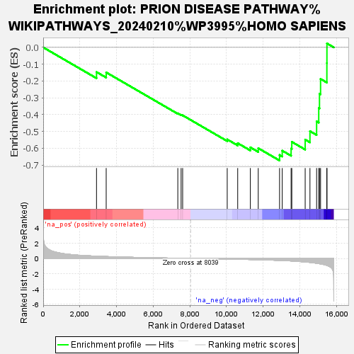
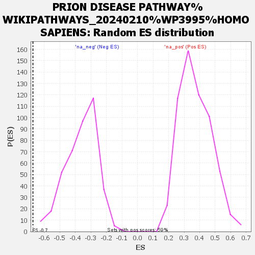

| | | Dataset | ranked |
| Phenotype | NoPhenotypeAvailable |
| Upregulated in class | na_neg |
| GeneSet | PRION DISEASE PATHWAY%WIKIPATHWAYS_20240210%WP3995%HOMO SAPIENS |
| Enrichment Score (ES) | -0.67312175 |
| Normalized Enrichment Score (NES) | -1.861369 |
| Nominal p-value | 0.0 |
| FDR q-value | 0.3622441 |
| FWER p-Value | 0.932 |
Table: GSEA Results Summary

Fig 1: Enrichment plot: PRION DISEASE PATHWAY%WIKIPATHWAYS_20240210%WP3995%HOMO SAPIENS
Profile of the Running ES Score & Positions of GeneSet Members on the Rank Ordered List
| SYMBOL | RANK IN GENE LIST | RANK METRIC SCORE | RUNNING ES | CORE ENRICHMENT | | 1 | RFX5 | 2910 | 0.291 | -0.1466 | No |
| 2 | STAT3 | 3438 | 0.244 | -0.1488 | No |
| 3 | TBP | 7346 | 0.026 | -0.3921 | No |
| 4 | BCL11A | 7526 | 0.019 | -0.4010 | No |
| 5 | RAD21 | 7610 | 0.016 | -0.4041 | No |
| 6 | CREB1 | 10042 | -0.080 | -0.5475 | No |
| 7 | MAPK1 | 10614 | -0.107 | -0.5698 | No |
| 8 | CASP3 | 11305 | -0.146 | -0.5948 | No |
| 9 | NCAM1 | 11735 | -0.173 | -0.5998 | No |
| 10 | CTCF | 12898 | -0.260 | -0.6400 | Yes |
| 11 | SMC3 | 13044 | -0.272 | -0.6144 | Yes |
| 12 | CHD2 | 13528 | -0.332 | -0.6025 | Yes |
| 13 | RXRA | 13566 | -0.336 | -0.5620 | Yes |
| 14 | PRNP | 14296 | -0.466 | -0.5486 | Yes |
| 15 | EP300 | 14557 | -0.522 | -0.4985 | Yes |
| 16 | FGFR1 | 14920 | -0.634 | -0.4404 | Yes |
| 17 | MAPK3 | 15036 | -0.676 | -0.3614 | Yes |
| 18 | FYN | 15077 | -0.695 | -0.2753 | Yes |
| 19 | NFKB1 | 15136 | -0.715 | -0.1878 | Yes |
| 20 | MEF2C | 15480 | -0.911 | -0.0932 | Yes |
| 21 | BCL2 | 15483 | -0.918 | 0.0237 | Yes |
Table: GSEA details [plain text format]

Fig 2: PRION DISEASE PATHWAY%WIKIPATHWAYS_20240210%WP3995%HOMO SAPIENS: Random ES distribution
Gene set null distribution of ES for PRION DISEASE PATHWAY%WIKIPATHWAYS_20240210%WP3995%HOMO SAPIENS